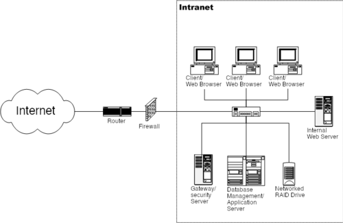

An intranet is a private network that is contained within an organization. It uses Internet Protocol (IP) technologies and is typically used for sharing information and resources among employees.
Intranets are often used to provide access to company information, tools, and applications that are not intended for public use. They can also be used to facilitate communication and collaboration among employees.
Intranets are secured using firewalls, login systems, and user authentication to ensure only authorized staff can access sensitive information.